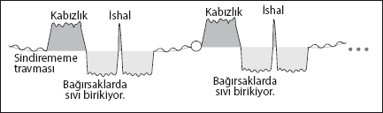

Hassas Bağırsak Sendromu (IBS)
Genelde psikolojimizi en iyi şekilde yansıtan organlarımız sindirim sistemimizle ilgilidir. Klasik tıp da stresin mide ve bağırsak hastalıkları üzerindeki etkisini kesin bir şekilde kabul eder. Zaten, mide ve bağırsak problemleri yaşayanlar da problemlerinin psikolojileriyle ne kadar ilgili olduğunun oldukça farkındadır.
Ancak ne yazık ki, tüm bu “konsensus”a rağmen, mide ve bağırsak hastalıklarının nedenini sadece strese bağlamak, yine topu taca atmak anlamına geliyor. Zira stres, sindirim sistemindeki organları bozmuyor. Beynimiz belli bir tehdide karşı sindirim sistemini, normalden farklı şekilde çalıştırmaya karar veriyor. Şimdi bu hastalıklardan en yaygın ve genelde kesin çözümü olmayan birini, Hassas Bağırsak Sendromunu (IBS) nedenleriyle açıklamaya ve çözüm bulmaya çalışalım.
Öncelikle sindirim sistemimizin, evrim sırasında milyonlarca yıl önce ilk şekillenen sistemlerden biri olduğunu, tepkilerinin “toprakta sürünen kurt” döneminden kaldığını hayal edin. Böyle bir kurdun en önemli sorunu, yutmaya çalıştığı bir besin, sindirim sisteminde takıldığı zaman, bir an önce bu besinden ağız ya da anüs yoluyla kurtulmaya çalışmaktır.
Beynimizin programlarının milyonlarca yıl öncesinden kaldığını söylemiştik. Artık mevcut hayatımızda sindirmemiz gereken sadece besinler değil. İçimize sindiremediğimiz, dramatik, hiç beklemediğimiz, çaresiz kaldığımız ve kendimizi yalnız hissettiğimiz bir olay sırasında da beynimiz sindirim programını başlatabiliyor. Sindiremediğimiz olaya karşı olan öfkemiz gerçekten de beynimizin ilkel programını harekete geçiyor.
Peki, hangi sindirim organımızda bu program başlıyor?
Bu tamamıyla söz konusu dramatik olayı ne kadar sindirdiğimizle ilgili... Mesela, yaşanan olayı hiç kabul etmek istemezsek bir gastrit ya da reflü şikâyeti ortaya çıkabilir. Ya da olayı kabul edip hayatımıza devam eder ve yine de sindiremezsek bağırsaklarımız tepki verebilir. Bu arada şikâyetin şiddeti de tamamıyla dramatik olayın şiddetiyle doğru orantılı olacaktır.

Stres dönemi
Stres döneminde beyin sindirilemeyen bir “nesne” olduğunu düşünüyor ve buna göre tepki veriyor. Stres döneminde stres ve endişelerimizin tavan yaptığını söylemeye gerek yok. Bağırsaktaysa sindirimi arttırmak adına “sindirim sıvıları” artıyor. Bu dönem sindirmeye çalışmakla ve “kabızlıkla” geçiyor.
Çözüm sonrası
Çözüm genelde konuyu unutmakla gerçekleşiyor. Beyin konudan uzaklaştığı an, bağırsaklar “suyla” doluyor. Bunun nedeniyse, parçalandığı düşünülen “nesnenin” parçalarından kurtulmak. Bu dönemde psikolojimiz, her çözüm sonrasında olduğu gibi rahatlamış durumda.
İyileşme krizi = İshal
Her iyileşme krizinde olduğu gibi stres kısa bir süre yeniden dönüyor ve vücudumuzdan iyileşme döneminin fazla “sıvıları” atılıyor. İshalin amacı bağırsakta biriken sindirim sıvılarından, sudan ve sindirilmeye çalışılan “nesne”den kurtulmak.
Ekibimle yaptığımız çalışmalarda mide sorunlarında hatırı sayılır bir başarı sağladığımızı, birkaç NeuroFormat® çalışmasında kişinin sindiremeyerek öfke duyduğu olayı bulmak kaydıyla sorunu tamamıyla çözdüğümüz birçok farklı vaka olduğunu söyleyebilirim.
IBS ve benzeri sorunlardan tamamıyla kurtulmak için en önemli nokta, bu sorunun gerçekte hangi travmanın sonucu olduğunu doğru teşhis edebilmek. Eğer doğru olayı bulabilirseniz çözümün oldukça yakınınızda olduğunu söyleyebilirim.